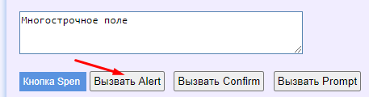
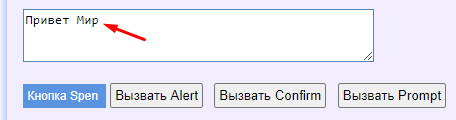
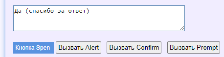
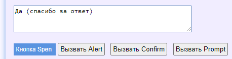
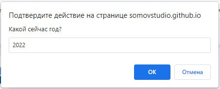
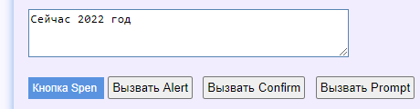
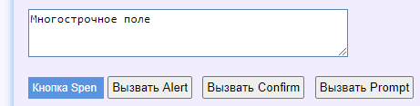

Alert, prompt and confirm dialog windows
The browser has disabled support for the alert, prompt and confirm dialog windows.
So that the code is executed ignoring calls to these dialog windows.
How does it work? Let's take a test page as an example https://somovstudio.github.io/test2.html
Click on the button "Вызвать Alert"

a dialog window opens

by clicking OK, we will see the message "Привет Мир" in the field

That is, the message "Привет Мир" will be displayed in the field only after clicking OK in the Alert dialog box.
If you press the button "Вызвать Confirm" a question will be asked and the answer will be displayed in the field after clicking on "OK" (or "Cancel")
 

If you press the button "Вызвать Confirm" a question will be asked and the answer will be displayed in the field after entering the number and clicking OK

Now let's do the same with autotest hands
|
File: ExampleTest5.cs |
|
using System; using System.Collections.Generic; using System.ComponentModel; using System.Windows.Forms; using System.Threading; using System.Threading.Tasks; using System.IO; using System.Data; using System.Drawing; using System.Linq; using System.Text; using System.Text.RegularExpressions; using System.Net; using System.Net.Http; using System.Net.Http.Headers; using System.Reflection; using Newtonsoft.Json; using HatFramework; namespace Hat { public class ExampleTest5 { Tester tester; // The main variable for the autotest operation // The main input function (the autotest starts with this function) public async void Main(Form browserWindow) { tester = new Tester(browserWindow); // Initializing the main variable await setUp(); // The function of getting started with the autotest await test(); // The function of performing test actions await tearDown(); // Autotest shutdown function } public async Task setUp() { await tester.BrowserFullScreenAsync(); // Sets the browser resolution to full screen } public async Task test() { await tester.TestBeginAsync(); // The beginning of the execution of actions await tester.GoToUrlAsync("https://somovstudio.github.io/test2.html", 5); // Loading the page at the specified address await tester.WaitAsync(2); // Waiting for 2 seconds await tester.ClickElementByIdAsync("btnAlert"); // Pressing the button await tester.WaitAsync(2); // Waiting for 2 seconds await tester.ClickElementByIdAsync("btnConfirm"); // Pressing the button await tester.WaitAsync(2); // Waiting for 2 seconds await tester.ClickElementByIdAsync("btnPrompt"); // Pressing the button await tester.TestEndAsync(); // Completing actions } public async Task tearDown() { await tester.BrowserCloseAsync(); // Closes the browser } } } |
After running the autotest, we will see that the dialog boxes do not open, and the data changes in the field.
The page will load first in its default state

Then, autotest, click the "Call Alert" button, the dialog box will not open, and the message "Hello World" will immediately appear in the field

Then, autotest, click the "Call Confirm" button, the dialog box will not open, and the message "No (thanks for the answer)" will immediately appear in the field

Then, autotest, click the "Call Prompt" button, the dialog box will not open, and the message "Now is a null year" will immediately appear in the field

As you can see, the browser ignored the dialog boxes and displayed the default values.
Thus, dialog boxes do not interfere with the execution of autotests.
Created with the Personal Edition of HelpNDoc: Produce Kindle eBooks easily